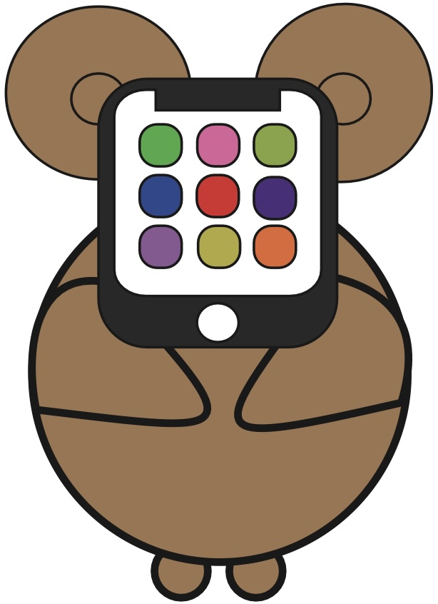
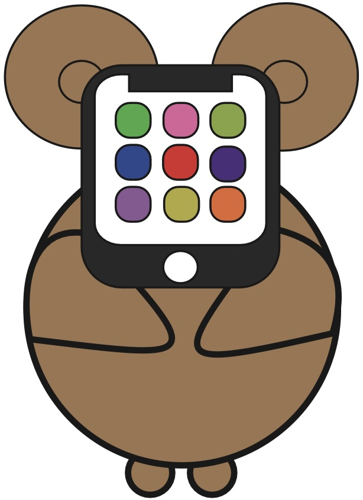

Profile
名前：KOH
出身：静岡県
所属：愛知工業大学 情報科学部 情報科学科
スキル：C C++ Go Illustrator
ICON
初めてのIllustratorを使用したプロジェクトとして、「動物アイコン」を制作しました。この作品は、動物をシンプルでカラフルなデザインで表現しています。各アイコンはデジタルメディアに最適化されており、アプリケーション、ウェブサイト、プレゼンテーション資料など、幅広い用途で活用できる用に作成しました。
制作時期：2023年 4月
制作期間：2時間
使用ツール：Illustrator
Additivemixture Subtractivemixtrurer


この作品は、色の混色原理である加法混色と減法混色をテーマにした作品です。Illustratorを使用して、視覚的にそれぞれの混色原理を理解しやすく表現しています。加法混色では光の三原色（赤、緑、青）を、減法混色では色の三原色（シアン、マゼンタ、イエロー）を使用して、色の混ざり方の違いを視覚的に示しています。
制作時期：2023年 5月
制作期間：2時間
仕様ツール：Illustrator
Character
 

愛知工業大学情報科学部をイメージして制作したマスコットキャラクターです。このキャラクターは、大学のシンボルとして親しみやすく、情報科学部の特色を反映しています。デザインは、学生や教職員、来訪者に対して情報科学部の魅力を伝えることを目指しました。
制作時期：2023年 6月
制作期間：3時間
仕様ツール：Illustrator
Visiblelight

この作品は、可視光線のスペクトルをテーマにしたデジタルアートです。光の七色を鮮やかに表現し、光の波長ごとに異なる色の美しさを視覚的に楽しめるようにデザインしました。Adobe Illustratorを使用して、各色のグラデーションや相互作用を細かく再現しています。
制作時期：2023年 6月
制作期間：3時間
仕様ツール：Illustrator
ご覧いただきありがとうございました